The Itch Diffusion Leaves Behind
Recall the end of the diffusion journey. We built a forward SDE to drown data in noise, learned the score of every noised marginal, derived the reverse SDE, and then discovered the probability flow ODE: a deterministic velocity field whose smooth trajectories carry noise to data with exactly the right distribution. DDIM, the fast sampler everyone actually uses, is an integrator of that ODE.
Now look at the construction with fresh eyes. The thing we use at the end is a velocity field. The things we built to get it: a stochastic process, a score ladder, an ELBO, reverse time theorems. The entire stochastic apparatus was scaffolding around an object that is, in the end, just arrows telling points where to move.
Flow matching is the act of removing the scaffolding. Choose the path you want probability mass to follow from noise to data. Write down the velocity field of that path. Regress a network onto it. Done. No SDE, no score, no ELBO, and, as we will see, with the freedom to choose straight paths, which diffusion never had.
The Object: Probability as a Fluid
First, meet the object properly. A velocity field v(x, t) assigns an arrow to every point in space at every time. Drop a particle anywhere and it must follow the arrows:
Now drop not one particle but an entire distribution of them, p₀. The flow carries the whole cloud, and the density at time t is the pushforward p_t = [φ_t]_* p₀. The deep law governing this is borrowed straight from fluid dynamics, the continuity equation:
So the generative recipe is: find a field v whose flow carries an easy p₀ (Gaussian noise) to the data distribution p₁ at t = 1, then sample by integrating the ODE. This idea is older than flow matching: continuous normalizing flows (2018) trained exactly this object by maximum likelihood. Their curse was the training cost: evaluating the likelihood requires simulating the entire ODE and its divergence for every training example. Beautiful theory, brutal compute. Flow matching exists to keep the object and delete the simulation.
The Dream Objective, and Why It Is Impossible
Here is the loss we would love to optimize. Pick any probability path p_t you like, connecting noise p₀ to data p₁, with u_t(x) the true velocity field that generates it. Then just regress:
One problem: we cannot evaluate u_t(x). The marginal velocity at a point depends on the entire data distribution at once, the same way diffusion's marginal score did. We know where individual samples are, not what the collective flow of the whole distribution looks like at an arbitrary point in space. The dream loss has an unknowable regression target.
If this feels familiar, it should. Diffusion hit the identical wall: the marginal score was intractable, and the rescue was Vincent's theorem, denoising score matching, which replaced the unknowable marginal with a computable per sample conditional. Flow matching is about to make exactly the same move, and the parallel is not an analogy, it is the same mathematics.
The Miracle: Conditional Flow Matching
The rescue (Lipman et al., 2023). Stop trying to describe the whole river at once. Instead, describe the journey of one data point at a time. Condition on a single data sample x₁ and choose a simple conditional path p_t(x | x₁), a little moving cloud that starts inside the noise at t = 0 and lands on x₁ at t = 1. For a simple cloud, its conditional velocity u_t(x | x₁) is known in closed form. Then train on the conditional target:
And now the theorem that makes the whole field work. The marginal velocity is exactly the conditional expectation of the per sample velocities passing through a point:
And least squares regression has a famous property: the minimizer of E‖v_θ(x) − Y‖² over functions of x is the conditional mean E[Y | x]. Expand both losses and the cross terms match through exactly this identity, giving:
Choose the Simplest Path: a Straight Line
The theorem holds for any conditional path. So choose the simplest one imaginable. Connect a noise draw x₀ to a data point x₁ with linear interpolation (note the convention flip from the diffusion blog: here t = 0 is noise and t = 1 is data):
This is the rectified flow / optimal transport path, and it turns training into something almost embarrassingly simple:
The running worked example returns. The same pixel from the diffusion blog, data value x₁ = 1.0. Draw noise x₀ = −0.4, draw t = 0.5. The training input is x_t = 0.5 × (−0.4) + 0.5 × 1.0 = 0.3. The regression target is x₁ − x₀ = 1.0 − (−0.4) = 1.4, and it would be 1.4 at every t along this segment. If the network outputs 1.3, the loss is (0.1)² = 0.01. That is the entire training step.
Sampling is numerical ODE integration, Euler in the simplest case:
BUT WAIT Different training segments cross each other. At a crossing point the network is told two different velocities for the same (x, t). How can one field satisfy both? ▶
It cannot, and it is not supposed to. This is the most instructive confusion in flow matching, and the answer was already planted in §4.
When two segments pass through the same point at the same time, the network receives contradictory targets there, sometimes the arrow of segment A, sometimes the arrow of segment B. Least squares regression under contradictory targets does not pick a winner. It converges to the conditional mean of the targets, the average arrow. And by the §4 identity, that average is precisely the true marginal velocity u_t(x). The contradiction is not a bug being tolerated. The averaging IS the mechanism that assembles the intractable marginal field out of cheap conditional pieces.
The price is geometric: where conditional segments cross, the averaged marginal flow must bend to stay a valid single valued field. So even though every training path was straight, the learned flow's trajectories are curved near crossings. Deterministic ODE trajectories cannot cross each other (uniqueness of solutions), so the marginal flow weaves smoothly where the training segments collided.
This single observation explains the next section: fewer crossings means straighter marginal flows means fewer solver steps. The whole rectification program is a war on crossings.
Crossings, Curvature, and Rectification
So the learned flow is straight exactly where training segments did not fight. With the default independent coupling (any noise paired with any data point), fights are everywhere: segments from all over the noise blob to all over the data manifold crisscross constantly, and the marginal trajectories come out gently curved. Curved trajectories need more Euler steps. The straightness we chose for the conditionals did not fully survive the averaging.
Rectified flow (Liu et al., 2022) fixes the coupling instead of the path. Train a first flow. Then generate pairs with the model itself: integrate noise x₀ forward to its output x̂₁, and keep (x₀, x̂₁) as a new training pair. These pairs are produced by non crossing ODE trajectories, so retraining on them, the reflow step, yields a dramatically straighter field. Each reflow provably does not increase transport cost and straightens trajectories, until one or two Euler steps suffice. This is the lineage behind one step image generators.
The Family Reunion: Diffusion Is a Flow Matching Choice
Now the moment the two blogs merge. Flow matching let us choose the conditional path. What if, instead of a straight line, we choose a Gaussian path with a schedule, the little cloud shrinking onto the data point:
Plug in the variance preserving schedule from the diffusion blog (α_t = √ᾱ, σ_t = √(1−ᾱ), reparameterized to continuous time) and the field you obtain is exactly the probability flow ODE of §8 of the diffusion blog. DDPM, score matching, DDIM: all of it is flow matching with one particular curved Gaussian path. The straight OT path is simply a different, and better behaved, point in the same design space. Sanity check the limiting cases of the straight path: α_t = t, σ_t = 1 − t gives u_t(x|x₁) = (x₁ − x)/(1 − t), and substituting x = (1−t)x₀ + t x₁ collapses it to x₁ − x₀, our constant arrow.
The dictionary between the languages is linear, extending the diffusion blog's table: for Gaussian paths, score, noise prediction, clean image prediction, and velocity are interconvertible: v = (σ̇/σ) x + σ²(σ̇/σ − α̇/α)·s(x, t) up to schedule constants, and ε, x̂₀, v parameterizations are affine re-labelings of one another. One object, now five lenses.
BUT WAIT If Gaussian path flow matching reproduces diffusion exactly, is flow matching just diffusion with a different schedule, or is it genuinely more general? ▶
On the overlap, they are the same theory, and that is a feature: every diffusion result transfers. But the flow matching formulation is strictly larger in three real ways.
The source can be anything. Diffusion's forward process must end at a Gaussian, by construction of the noising chain. Flow matching only needs samples from p₀ and p₁. Transport one image distribution to another, sketches to photos, low resolution to high, molecules to molecules. Noise is just the most common choice of p₀, not a requirement of the theory.
The path can be anything satisfying the boundary conditions. Gaussian paths are one family. Straight lines, optimal transport couplings, paths confined to manifolds or constraint sets, and the general stochastic interpolant x_t = α_t x₁ + β_t x₀ + γ_t z (Albergo and Vanden Eijnden) all fit the same CFM theorem. Diffusion occupies one slice of this space.
The coupling can be learned. Diffusion pairs every data point with independent noise, always. Flow matching can rewire who is paired with whom, minibatch OT coupling, reflow pairs, leading to straighter fields and fewer steps. That degree of freedom simply does not exist in the SDE story.
The honest summary: flow matching did not refute diffusion. It found the coordinate system in which diffusion is one curve among many, and then picked a better curve.
The Deeper Theory: Optimal Transport and the Cost of a Flow
One more level down, for the expert shelf. Among all velocity fields that transport p₀ to p₁, which is the best one? Fluid dynamics has owned this question since Benamou and Brenier (2000): rank fields by their kinetic energy, the total effort of moving the probability fluid:
This is the theoretical north star behind everything in §5 and §6. The OT flow is the straightest possible bridge. Per sample straight segments are the right local imitation of it. The reason independent coupling falls short is now precise: straightness of each segment is necessary but not sufficient, the pairing also has to be transport efficient, otherwise segments fly across the whole space and collide. Hence the two practical upgrades:
Minibatch OT coupling. Inside each training batch, solve a small optimal transport matching between the batch of noise draws and the batch of data points, then connect matched pairs. Segments become short and nearly parallel, crossings plummet, the learned field straightens, all for the cost of a tiny assignment problem per batch.
Reflow as cost descent. Each rectification round provably does not increase the kinetic energy of the flow and straightens trajectories. Reflow is a fixed point iteration crawling toward the OT flow, with the one step generator as the prize at the bottom.
Flow Matching Today, and the Whole Journey
The industry verdict came fast. Stable Diffusion 3 and Flux are rectified flow transformers, trained with the lerp and the subtraction of §5, with one practical refinement: t is sampled from a logit normal distribution concentrating effort on middle times, where the velocity is hardest. Meta's Movie Gen and the Voicebox and Audiobox line are flow matching, as are leading molecule and protein generators on manifolds. The reasons are the ones this blog earned: a five line training loop, no schedule zoo, stable optimization, few step sampling out of the box, and classifier free guidance carrying over verbatim (guide the velocity exactly as you guided the score).
| Diffusion (DDPM lineage) | Flow matching (RF lineage) | |
|---|---|---|
| Training target | noise ε in a corrupted sample | displacement x₁ − x₀ on a segment |
| Blend | √ᾱ x₀ + √(1−ᾱ) ε, schedule required | (1−t) x₀ + t x₁, a lerp |
| Theory engine | ELBO, denoising score matching, reverse SDE | continuity equation, CFM theorem, OT |
| Sampling | SDE or probability flow ODE, curved | ODE, near straight, 10 to 50 steps, 1 after reflow |
| Source distribution | must be Gaussian | anything you can sample |
| Coupling | independent, fixed | free: independent, minibatch OT, reflow |
| Relationship | diffusion = flow matching on the Gaussian arc; the chord is the upgrade | |
The journey, end to end
Stand back and the two blogs tell one story. The VAE built a bridge from noise to data in a single learned leap and paid in blur. Diffusion stretched the leap into a thousand stochastic whispers, discovered the score hiding in its noise predictor, took the continuum limit, and found, at the very bottom, a deterministic river: the probability flow ODE. Flow matching then asked the question the whole construction was begging for: if the river is the product, learn the river. Declare a path, average cheap per sample arrows into the true field by nothing more than least squares, choose the path straight, fix the pairing, and the thousand whispers become a handful of strides.
Flow matching trains a velocity field by regression: interpolate a noise draw toward a data point, ask the network for the displacement vector, repeat. The conditional flow matching theorem guarantees this cheap per sample regression has the same gradients as matching the intractable marginal field, because least squares averages crossing targets into exactly the marginal velocity. Diffusion is the special case of a curved Gaussian path; the straight path plus transport aware pairing yields straighter flows, few step samplers, and, through reflow, one step generation. Probability is a fluid, the model is its river bed, and training is nothing but pointing arrows from noise to data.